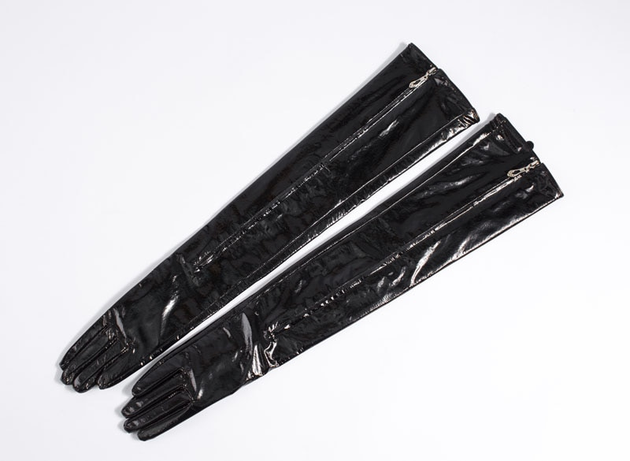

Welcome to pirštines
Darbo pirštinės | atvila.lt
2020.10.29 12:13
+370 52402890 PRISIJUNGTI lt en Apie mus Naujienos Kontaktai DARBO BATAI ATGAL Odiniai darbo batai Guminiai batai Žieminiai darbo batai Darbo pusbačiai Darbo sandalai Vidpadžiai Laisvalaikio batai DARBO PIRŠTINĖS ATGAL Aplietos pirštinės Lateksu aplietos pirštinės Nitrilu aplietos pirštinės Poliuretanu aplietos pirštinės PVC danga aplietos pirštinės Megztos darbo pirštinės Odinės darbo pirštinės Vienkartinės pirštinės Lateksinės pirštinės Nitrilinės pirštinės Vinilinės pirštinės Guminės pirštinės Siūtos darbo pirštinės Žieminės darbo pirštinės Suvirintojo pirštinės GUIDE pirštinės GRANBERG pirštinės DARBO RŪBAI ATGAL Darbo kostiumai Darbo kelnės Darbo kombinezonai Darbo šortai ir bridžai Darbo švarkai Apsiaustai nuo lietaus Žieminiai darbo rūbai Darbo liemenės Darbo striukės Termo apatiniai Suvirintojo rūbai Kiti darbo rūbai Laisvalaikio rūbai DARBO SAUGOS PRIEMONĖS ATGAL Apsauginiai šalmai Veido apsauga Apsauginės ausinės Kvėpavimo takų apsauga Apsauginės kaukės ir puskaukės Filtrai puskaukėms ir kaukėms Respiratoriai Apsauga nuo kritimo Apraišai Karabinai Lynai Lynai su amortizatoriais Apsauginiai akiniai Antkeliai darbui Vaistinėlės Gesintuvai Kitos darbo saugos priemonės Pakavimo medžiagos IŠPARDAVIMAS ATGAL Batai Pirštinės Rūbai Kiti Apie mus Naujienos Kontaktai DARBO BATAI Odiniai darbo batai Guminiai batai Žieminiai darbo batai Darbo pusbačiai Darbo sandalai Vidpadžiai Laisvalaikio batai DARBO PIRŠTINĖS Aplietos pirštinės Lateksu aplietos pirštinės Nitrilu aplietos pirštinės Poliuretanu aplietos pirštinės PVC danga aplietos pirštinės Megztos darbo pirštinės Odinės darbo pirštinės Vienkartinės pirštinės Lateksinės pirštinės Nitrilinės pirštinės Vinilinės pirštinės Guminės pirštinės Siūtos darbo pirštinės Žieminės darbo pirštinės Suvirintojo pirštinės GUIDE pirštinės GRANBERG pirštinės DARBO RŪBAI Darbo kostiumai Darbo kelnės Darbo kombinezonai Darbo šortai ir bridžai Darbo švarkai Apsiaustai nuo lietaus Žieminiai darbo rūbai Darbo liemenės Darbo striukės Termo apatiniai Suvirintojo rūbai Kiti darbo rūbai Laisvalaikio rūbai DARBO SAUGOS PRIEMONĖS Apsauginiai šalmai Veido apsauga Apsauginės ausinės Kvėpavimo takų apsauga Apsauginės kaukės ir puskaukės Filtrai puskaukėms ir kaukėms Respiratoriai Apsauga nuo kritimo Apraišai Karabinai Lynai Lynai su amortizatoriais Apsauginiai akiniai Antkeliai darbui Vaistinėlės Gesintuvai Kitos darbo saugos priemonės Pakavimo medžiagos 0 JŪSŲ KREPŠELIS 0 € PRELIMINARI KAINA 0 € Į KREPŠELĮ TITULINIS Visi produktai DARBO PIRŠTINĖS JŪSŲ KREPŠELIS DARBO BATAI ATGAL Odiniai darbo batai Guminiai batai Žieminiai darbo batai Darbo pusbačiai Darbo sandalai Vidpadžiai Laisvalaikio batai DARBO PIRŠTINĖS ATGAL Aplietos pirštinės Lateksu aplietos pirštinės Nitrilu aplietos pirštinės Poliuretanu aplietos pirštinės PVC danga aplietos pirštinės Megztos darbo pirštinės Odinės darbo pirštinės Vienkartinės pirštinės Lateksinės pirštinės Nitrilinės pirštinės Vinilinės pirštinės Guminės pirštinės Siūtos darbo pirštinės Žieminės darbo pirštinės Suvirintojo pirštinės GUIDE pirštinės GRANBERG pirštinės DARBO RŪBAI ATGAL Darbo kostiumai Darbo kelnės Darbo kombinezonai Darbo šortai ir bridžai Darbo švarkai Apsiaustai nuo lietaus Žieminiai darbo rūbai Darbo liemenės Darbo striukės Termo apatiniai Suvirintojo rūbai Kiti darbo rūbai Laisvalaikio rūbai DARBO SAUGOS PRIEMONĖS ATGAL Apsauginiai šalmai Veido apsauga Apsauginės ausinės Kvėpavimo takų apsauga Apsauginės kaukės ir puskaukės Filtrai puskaukėms ir kaukėms Respiratoriai Apsauga nuo kritimo Apraišai Karabinai Lynai Lynai su amortizatoriais Apsauginiai akiniai Antkeliai darbui Vaistinėlės Gesintuvai Kitos darbo saugos priemonės Pakavimo medžiagos IŠPARDAVIMAS ATGAL Batai Pirštinės Rūbai Kiti Apie mus Naujienos Kontaktai lt en MANO PROFILIS PRISTATYMO ADRESAI UŽSAKYMŲ ISTORIJA ATSIJUNGTI 0 € PRELIMINARI KAINA 0 € Į KREPŠELĮ
DARBO PIRŠTINĖS
Rūšiuoti pagal Naujausi Pigiausi Prekių filtras SPAUSDINTI Rūšiuoti pagal Naujausi Pigiausi 7002B_550G Megztos darbo pirštinės su mėlynais taškais 10 0.30€ 0.36€ AKCIJA 5004-EKO Darbinės pirštinės aplietos baltu PU 6 7 8 9 10 ... 0.47€ POPULIARIAUSIAS 7002B_700G Megztos darbo pirštinės su žaliais PVC taškais 10 0.39€ POPULIARIAUSIAS 5002-EKO Darbo pirštinės aplietos juodu PU 6 7 8 9 10 ... 0.48€ POPULIARIAUSIAS 5003-EKO Pirštinės aplietos pilku poliuretanu 6 7 8 9 10 ... 0.48€ 30103010 Megztos darbo pirštinės pilkos spalvos 11 0.34€ 0.39€ AKCIJA 30103010-DV Megztos pirštinės su PVC taškais iš abiejų pusių 11 0.33€ 0.42€ AKCIJA GARDEN Aplietos pirštinės su plastikiniais nagais 10 2.30€ 3.99€ AKCIJA 1011 Aplietos darbo pirštinės pilkos spalvos 7 8 9 10 0.62€ POPULIARIAUSIAS NL-3058 Odinės pirštinės su lipduku 8 9 10 11 1.79€ POPULIARIAUSIAS 15053010 Neopreninės - lateksinės pirštinės 32cm 8 9 10 11 1.69€ NAUJIENA 30102010 Megztos darbo pirštinės mėlynos spalvos 11 0.36€ 1213 Darbo pirštinės su languotu apliejimu 10 0.79€ 1011BL Darbinės pirštinės aplietos juodu nitrilu 9 10 11 0.62€ 15055010 Nitrilinės pramoninės pirštinės 10 11 2.90€ LISP-786 Odinės pirštinės su kevlaro siūlais 10 11 3.87€ 1115 Megztos nailoninės pirštinės 10 0.33€ 0.41€ 15051010 Nitrilinės pirštinės atsparios chemijai 8 9 10 11 2.12€ LISP-786-15 Odinės suvirintojų pirštinės 10 11 3.81€ 2022TPE Pirštinės aplietos TPE 10 1.45€ LISP-105-Y-11 Odinės pirštinės geltonos spalvos 11 dydis 11 2.88€ SIL Silikoninės pirštinės su šereliais Universalus 4.50€ LISP-105-Y-10 Odinės pirštinės geltonos spalvos 2.84€ LISP-105-kntcuff Odinės pirštinės su megztu rankogaliu 10 11 2.72€ 3011 Megztos nailoninės pirštinės su mėlynais taškais 11 0.65€ NL-3152J Odinės pirštinės su nailonine viršutine dalimi 1.89€ 5001 Megztos nailoninės pirštinės 7 8 9 10 0.42€ 28019010 Mechaninės darbo pirštinės 10 3.39€ 3.59€ AKCIJA 18201010 Aplietos darbo pirštinės salotinės spalvos 7 8 9 10 11 ... 0.52€ 0.63€ AKCIJA 7001B_550G Megztos darbinės pirštinės 9 dydis 9 0.25€ 10205810 Darbo pirštinės su nitrilo apliejimu 8 9 10 1.21€ 1.40€ AKCIJA 7001B_600G Megztos darbinės pirštinės 10 dydis 10 0.25€ 12204110 Aplietos darbinės pirštinės mėlynos spalvos 10 11 2.01€ AKCIJA 7001B-720-S Megztos pilkos spalvos pirštinės 0.30€ 7001N-600G Megztos darbinės pirštinės 10 dydis 10 0.25€ NL-5000 Odinės darbo pirštinės su tinkleliu 10 11 2.89€ 1 2 3 4 5 .... 6Rankos žmogui reikalingos dideliems ir mažiems darbams atlikti. Neišvengiamai joms tenka dažniau sušlapti, būti nudegintom, sušalti ir pan. Dėl to mūsų rankos reikalauja išskirtinio dėmesio. Norėdami jas apsaugoti, renkamės ne tik atitinkamus kremus, bet ir rankas saugančias pirštines. Svarbu prisiminti, kad pirštinės reikalingos ne tik atšalus orams, bet ir atliekant įvairius darbus esant žemai temperatūrai uždarose patalpose.
Darbo pirštinės – svarbi apsauga mūsų rankoms
Darbinės pirštinės yra nepakeičiamos dirbant statybose, žemės ūkyje, įvairiose gamyklose, vandentiekio ūkyje, dirbant su elektros prietaisais, automobilių servisuose. Be to, šios pirštinės reikalingos ir dirbant grožio srityje. Kirpėjai, kosmetologai, manikiūrininkai irgi teigia, kad kokybiškos darbo pirštinės jiems būtinos. Norėdami išvengti infekcijų, kraujo užkrėtimo, darbines pirštines mūvi ir medicinos darbuotojai.
Įvairių rūšių darbo pirštinės apsaugo rankas nuo mechaninių, cheminių ir terminių pažeidimų, nešvarumų ir metalo purslų.
Ką turėtume žinoti apie darbines pirštines jas rinkdamiesi?
Pirmiausia reiktų atkreipti dėmesį į pirštinių rūšį. Pagrindinės pirštinių rūšys:
Aplietos pirštinės Megztos pirštinės Odinės pirštinės Guminės pirštinės Siūtos pirštinės Vienkartinės pirštinės Nitrilinės pirštinės Lateksinės pirštinės Suvirinimo pirštinėsKuo skiriasi šios darbinės pirštinės ir kada kokias reikėtų rinktis?
Aplietos pirštinės, aplietos skirtingomis medžiagomis, skirtos atlikti darbams, kuriems reikalingos pirštinės su stipriu sukibimu, apsaugančios nuo drėgmės ir cheminių medžiagų.
Megztos darbo pirštinės, pagamintos iš medvilnės, kuri nesukelia alerginių reakcijų. Šildo rankas ir saugo nuo nešvarumų ir pažeidimų.
Odinės pirštinės, pagamintos iš jaučio, ožkos, avies ar dirbtinės odos yra atsparios dilimui, patvarios.
Siūtos pirštinės dažnai siuvamos iš skirtingų medžiagų bei būna apliejamos. Dėl gero sukibimo tinka įvairiems darbams.
Vienkartinės pirštinės saugo rankas nuo cheminių medžiagų, vandens ir kt. Naudojamos kambarių valymui, plaukų dažymui ir kt.
Nitrilinės pirštinės yra atsparios rūgštims ir dažams, todėl jas naudoja patalpų apdailos darbuotojai, dirbantys su dažais ir laku.
Lateksinės pirštinės išsiskiria tuo, kad lateksas sumažina cheminių medžiagų (daugiausia silikonų) poveikį odai. Tačiau šios pirštinės negali būti naudojamos dirbant su mazutu, alyvomis ir chloru.
Suvirinimo pirštinės pasižymi stipria apsauga nuo karščio ir cheminių medžiagų.
Specialios darbo pirštinės tinka dirbti su grandininiais pjūklais, turi aukštą saugos lygį nuo prapjovimo.
Be minėtų pirštinių, rekomenduojame ir Guide bei Granberg pirštines, kurios yra pritaikytos įvairių specialybių žmonėms.
Rinkdamiesi pirštines atkreipkite dėmesį į tai, kokius darbus ir kada atliksite
Norėdami apsaugoti rankas nuo neigiamų veiksnių dirbdami, naudokite darbo pirštines iš kokybiškų ir darbo specifiką bei laiką atitinkančių medžiagų.
Šaltu oru reikia šiltų, žiemos šalčiui bei vėjui atsparių pirštinių.
Dirbant sode darbo pirštinės reikalingos ir vyrams, ir moterims, ir vaikams. Tai dažniausiai megztos ar vienkartinės pirštinės, skirtos dirbti su sodo gėrybėmis. Jei turite ūkį ir rengiatės talkai – darbo pirštines įsigyti reikia.
Buities darbams, grožio sferai, medicinai tinkamiausios įvairių medžiagų vienkartinės pirštinės.
Detaliau patarti jums gali mūsų parduotuvės darbuotojai. Kreipkitės į mus ir tinkamos darbinės pirštinės greitai jums bus pristatytos.
Jei esate darbų vykdytojas ar pirštinės reikalingos dažnai, – darbo pirštinės urmu – geras pasirinkimas, taupantis ir laiką, ir pinigus.
Prekes galima apžiūrėti apsilankius mūsų ofise Granito g. 3, Vilniuje esančioje ekspozicijoje arba čia, internetinėje parduotuvėje.
Darbo pirštinės internetu – patogus būdas užsisakyti jūsų darbo specifiką atitinkančias pirštines. Siunčiama visoje Lietuvoje. Susisiekti galite el. paštu info@atvila.lt arba telefonu +370 52402890.
SKAITYTI DAUGIAUKAINA:
DYDIS:
6 7 8 9 10 11 12 S M L XLSPALVA:
IŠSAUGOTIUŽSIPRENUMERUOKITE MŪSŲ NAUJIENLAIŠKĮ
ATVILA Apie mus Naujienos Kontaktai Partneriams Sertifikatai APTARNAVIMAS Kaip užsisakyti? Taisyklės Pristatymo sąlygos Prekių grąžinimas ir garantija MANO PASKYRA Registruotis Prisijungti Pamiršau slaptažodį Naujienlaiškis KONTAKTAI Adresas: Granito g. 3, Vilnius LT-02241, Tel.: +370 52402890, Faks.: +370 52402890, El. paštas: info@atvila.lt © 2020 Uždaroji akcinė bendrovė “Atvila“KAINA:
DYDIS:
6 7 8 9 10 11 12 S M L XLSPALVA:
IŠSAUGOTIEl. parduotuvėje naudojami slapukai. Naršydami toliau Jūs sutinkate su UAB "Atvila" slapukų politika.
SUTINKU Privatumo politikaĮVESKITE PREKIŲ KREPŠELIO PAVADINIMĄ
AR TIKRAI NORITE IŠTRINTI PREKIŲ KREPŠELĮ?
ATŠAUKTI IŠTRINTIAR TIKRAI NORITE IŠTRINTI PRODUKTĄ?
ATŠAUKTI IŠTRINTIPRISTATYMO INFORMACIJA
PRISTATYMO INFORMACIJA
AR TIKRAI NORITE IŠTRINTI ADRESĄ?
ATŠAUKTI IŠTRINTIAR TIKRAI NORITE IŠTRINTI UŽSAKYMĄ?
ATŠAUKTI IŠTRINTIĮVESKITE KAM SKIRTAS PASIŪLYMAS
